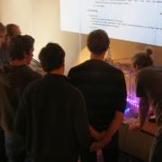
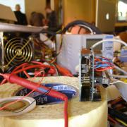

{% block content %}
{% filter markdown|typogrify -%}
Die Pinte42 war genau der richtige Ort für unsere dritte Alpha. Die Vorträge
konnten in Ruhe in einem separaten Raum gehalten werden und die Nähe zu den
Studenten hat noch den einen oder anderen Zufallsgast gebracht ;)

Hauptanziehungspunkt war erneut der uns leihweise zur Verfügung gestellte
3D-Drucker.
An Tag drei konnte er sogar dazu gebracht werden, Vereinslogos aus Kunststoff
(ABS) zu drucken.
Auch die Vorträge über “rechtliche Fallstricke bei Social Media” oder
“Bit-Twiddling” waren gut besucht. Gleiches gilt für die angebotenen Workshops
– beispielsweise zum Arduino-Einstieg. Am Abend des dritten Tages hatte der
große Besucheransturm gar die Matecalypse ausgelöst – die gesamten 70 Liter
waren ausgetrunken ;)

Trotzdem wurde bis Sonntag spät an allen möglichen Projekten getüftelt und
Interessenten das Löten beigebracht. Der Verein hat fünf neue Mitglieder und
viele neue Freunde gewonnen. Die Alpha war ein voller Erfolg!
#### Terminplan
* Do, 13.10.2011
* 17:00 Aufbau
* 19:00 Beginn
* 21:00 – 22:00 Tutorial: Arduino Programmierung ohne Arduino IDE (olt)
* open end
* Fr, 14.10.2011
* 15:00 Beginn
* 19:00 – 20:00 Vortrag: Rechtliche Fallstricke bei Social Media und Blogs (tmp)
* 20:00 – 21:00 Vortrag: Von Hackern und Holländern – Microcontroller-Code-Optimierungen… (xinitrc)
* open end
* Sa, 15.10.2011
* 13:00 Beginn
* 14:00 – 14:30 Vortrag: Arduino-Einführung (MarvinGS oder Thorben?)
* 15:00 – 15:30 Tutorial: Lockpicking für Anfänger (ld)
* 16:00 – 17:00 Workshop: Einführung Creative Commons (tmp)
* 17:30 – 19:30 Workshop: Building a Blog-Engine with CouchDB and CouchApps (xinitrc)
* open end
* So, 16.10.2011
* 13:00 Beginn
* 15:00 – 15:30 Vortrag: Arduino-Einführung (MarvinGS oder Thorben?)
* 16:00 – 17:00 Workshop: Erste Schritte mit dem Arduino (MarvinGS oder Thorben?)
* ca. 19:00 Abbau
{%- endfilter %}
{% endblock content %}